CODING AGENTS AS PIXEL WORLD MODELS
traex/DeepSeek-V4.1-Flash · 0115
点击播放 · 原生 RGB 像素
逐轮保存的候选
回放视频、检查图与代码变化。
每份候选均可单独播放。实际图片检查记录在下方工具轨迹中。
候选 01播放与检查图
点击播放 · 原生 RGB 像素
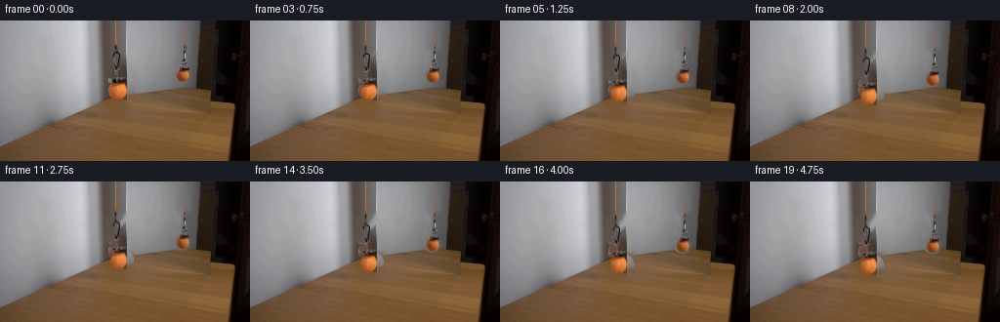
展开代码变化
--- 上一保存版本
+++ 本次保存版本
@@ -0,0 +1,253 @@
+from pathlib import Path
+
+import cv2
+import numpy as np
+from PIL import Image, ImageDraw
+
+import artifact_io
+
+
+CASE_DIR = Path(__file__).resolve().parent
+WIDTH, HEIGHT, FRAME_COUNT, FPS = 256, 144, 20, 4
+
+
+def supersampled_mask(draw_fn, scale=6):
+ mask = Image.new("L", (WIDTH * scale, HEIGHT * scale), 0)
+ draw = ImageDraw.Draw(mask)
+ draw_fn(draw, scale)
+ return np.asarray(mask.resize((WIDTH, HEIGHT), Image.Resampling.LANCZOS), dtype=np.float32) / 255.0
+
+
+def make_masks():
+ def object_parts(draw, scale, reflected=False):
+ s = scale
+ if not reflected:
+ # Hanging hardware and ball.
+ draw.rounded_rectangle(
+ (110 * s, 33 * s, 132 * s, 61 * s), radius=3 * s, fill=255
+ )
+ draw.ellipse((113.7 * s, 60.4 * s, 137.2 * s, 83.6 * s), fill=255)
+ # Cord.
+ draw.line(
+ [(117.7 * s, -2 * s), (118.4 * s, 37 * s)],
+ fill=255,
+ width=max(2, round(2.2 * s)),
+ )
+ else:
+ draw.rounded_rectangle(
+ (178.5 * s, 29.5 * s, 195 * s, 49 * s), radius=2.5 * s, fill=255
+ )
+ draw.ellipse((177.8 * s, 47.4 * s, 196.0 * s, 64.2 * s), fill=255)
+ draw.line(
+ [(189.6 * s, -2 * s), (189.0 * s, 32 * s)],
+ fill=255,
+ width=max(2, round(1.7 * s)),
+ )
+
+ def hardware_and_ball(draw, scale, reflected=False):
+ s = scale
+ if not reflected:
+ draw.rounded_rectangle(
+ (110 * s, 32.5 * s, 132 * s, 61 * s), radius=3 * s, fill=255
+ )
+ draw.ellipse((113.7 * s, 60.4 * s, 137.2 * s, 83.6 * s), fill=255)
+ else:
+ draw.rounded_rectangle(
+ (178.5 * s, 29.5 * s, 195 * s, 49 * s), radius=2.5 * s, fill=255
+ )
+ draw.ellipse((177.8 * s, 47.4 * s, 196.0 * s, 64.2 * s), fill=255)
+
+ def cords(draw, scale, reflected=False):
+ s = scale
+ if not reflected:
+ draw.line(
+ [(117.7 * s, -2 * s), (118.4 * s, 38 * s)],
+ fill=255,
+ width=max(2, round(2.2 * s)),
+ )
+ else:
+ draw.line(
+ [(189.6 * s, -2 * s), (189.0 * s, 33 * s)],
+ fill=255,
+ width=max(2, round(1.7 * s)),
+ )
+
+ return {
+ "all": supersampled_mask(
+ lambda d, s: (object_parts(d, s, False), object_parts(d, s, True))
+ ),
+ "real": supersampled_mask(lambda d, s: hardware_and_ball(d, s, False)),
+ "reflection": supersampled_mask(lambda d, s: hardware_and_ball(d, s, True)),
+ "real_cord": supersampled_mask(lambda d, s: cords(d, s, False)),
+ "reflection_cord": supersampled_mask(lambda d, s: cords(d, s, True)),
+ }
+
+
+def feather(alpha, sigma=0.55):
+ return cv2.GaussianBlur(alpha, (0, 0), sigmaX=sigma, sigmaY=sigma)
+
+
+def make_clean_background(frame, masks):
+ mask = (masks["all"] > 0.025).astype(np.uint8) * 255
+ mask = cv2.dilate(mask, np.ones((3, 3), np.uint8), iterations=1)
+ clean = cv2.inpaint(frame, mask, 5, cv2.INPAINT_TELEA)
+ # A second, smaller pass softens the long inpainting bands left by the hardware.
+ return clean
+
+
+def difference_alpha(frame, clean, region, floor=0.035, gain=4.8):
+ diff = np.linalg.norm(
+ (frame.astype(np.float32) - clean.astype(np.float32)) / 255.0, axis=2
+ )
+ alpha = np.clip((diff - floor) * gain, 0.0, 1.0)
+ alpha *= region
+ return alpha
+
+
+def extract_layers(frame, clean, masks):
+ real_region = feather(masks["real"], 0.4)
+ reflection_region = feather(masks["reflection"], 0.35)
+
+ # The ball's silhouette is known and gets a complete alpha; the metallic
+ # hanger is extracted by its difference from the inpainted background.
+ ball_real = supersampled_mask(
+ lambda d, s: d.ellipse(
+ (113.9 * s, 60.6 * s, 137.0 * s, 83.4 * s), fill=255
+ )
+ )
+ ball_ref = supersampled_mask(
+ lambda d, s: d.ellipse(
+ (178.0 * s, 47.6 * s, 195.8 * s, 64.0 * s), fill=255
+ )
+ )
+ alpha_real = np.maximum(
+ ball_real, difference_alpha(frame, clean, real_region) * (1 - ball_real)
+ )
+ alpha_ref = np.maximum(
+ ball_ref, difference_alpha(frame, clean, reflection_region) * (1 - ball_ref)
+ )
+ alpha_real = feather(alpha_real, 0.38)
+ alpha_ref = feather(alpha_ref, 0.32)
+ return alpha_real, alpha_ref
+
+
+def premultiplied(rgb, alpha):
+ return rgb.astype(np.float32) * alpha[:, :, None], alpha
+
+
+def warp_layer(rgb_premul, alpha, dx, dy, scale=1.0):
+ center = (WIDTH * 0.5, HEIGHT * 0.5)
+ matrix = cv2.getRotationMatrix2D(center, 0.0, scale)
+ matrix[:, 2] += (dx, dy)
+ warped_rgb = cv2.warpAffine(
+ rgb_premul,
+ matrix,
+ (WIDTH, HEIGHT),
+ flags=cv2.INTER_LINEAR,
+ borderMode=cv2.BORDER_CONSTANT,
+ borderValue=(0, 0, 0),
+ )
+ warped_alpha = cv2.warpAffine(
+ alpha,
+ matrix,
+ (WIDTH, HEIGHT),
+ flags=cv2.INTER_LINEAR,
+ borderMode=cv2.BORDER_CONSTANT,
+ borderValue=0,
+ )
+ return warped_rgb, warped_alpha
+
+
+def over(base, premul, alpha):
+ return np.clip(base.astype(np.float32) * (1 - alpha[:, :, None]) + premul, 0, 255)
+
+
+def extract_cord(frame, mask, x0, x1, y1):
+ region = np.zeros_like(mask)
+ region[:y1, x0:x1] = 1.0
+ alpha = feather(mask * region, 0.35)
+ rgb = frame.astype(np.float32)
+ return rgb * alpha[:, :, None], alpha
+
+
+def stretch_cord(premul, alpha, extra, x0, x1, source_h):
+ new_h = source_h + extra
+ small_rgb = premul[:source_h, x0:x1]
+ small_a = alpha[:source_h, x0:x1]
+ resized_rgb = cv2.resize(
+ small_rgb, (x1 - x0, int(np.ceil(new_h))), interpolation=cv2.INTER_LINEAR
+ )
+ resized_a = cv2.resize(
+ small_a, (x1 - x0, int(np.ceil(new_h))), interpolation=cv2.INTER_LINEAR
+ )
+ out_rgb = np.zeros_like(premul)
+ out_a = np.zeros_like(alpha)
+ h = min(HEIGHT, resized_rgb.shape[0])
+ out_rgb[:h, x0:x1] = resized_rgb[:h]
+ out_a[:h, x0:x1] = resized_a[:h]
+ return out_rgb, out_a
+
+
+def motion_offset(frame_index):
+ t = frame_index / (FRAME_COUNT - 1)
+ # A gentle start and finish keeps the demonstration calm and mechanical.
+ eased = t * t * (3.0 - 2.0 * t)
+ return 14.2 * eased
+
+
+def generate():
+ first = np.asarray(Image.open(CASE_DIR / "first_frame.png").convert("RGB"))
+ masks = make_masks()
+ clean = make_clean_background(first, masks)
+ alpha_real, alpha_ref = extract_layers(first, clean, masks)
+ real_premul, real_alpha = premultiplied(first, alpha_real)
+ ref_premul, ref_alpha = premultiplied(first, alpha_ref)
+
+ real_cord_premul, real_cord_alpha = extract_cord(
+ first, masks["real_cord"], 114, 123, 39
+ )
+ ref_cord_premul, ref_cord_alpha = extract_cord(
+ first, masks["reflection_cord"], 185, 194, 34
+ )
+
+ frames = []
+ for i in range(FRAME_COUNT):
+ if i == 0:
+ frames.append(first.copy())
+ continue
+
+ real_dy = motion_offset(i)
+ ref_dy = real_dy * 0.73
+
+ frame = clean.astype(np.float32)
+
+ # The reflected assembly is farther from the lens, so the same physical
+ # drop subtends fewer pixels than the near assembly.
+ ref_rgb, ref_a = warp_layer(
+ ref_premul, ref_alpha, 0.0, ref_dy, scale=1.0
+ )
+ frame = over(frame, ref_rgb, ref_a)
+
+ real_rgb, real_a = warp_layer(
+ real_premul, real_alpha, 0.0, real_dy, scale=1.0
+ )
+ frame = over(frame, real_rgb, real_a)
+
+ rc_rgb, rc_a = stretch_cord(
+ real_cord_premul, real_cord_alpha, real_dy, 114, 123, 39
+ )
+ frame = over(frame, rc_rgb, rc_a)
+ fc_rgb, fc_a = stretch_cord(
+ ref_cord_premul, ref_cord_alpha, ref_dy, 185, 194, 34
+ )
+ frame = over(frame, fc_rgb, fc_a)
+
+ frames.append(np.clip(frame, 0, 255).astype(np.uint8))
+
+ frames = np.asarray(frames, dtype=np.uint8)
+ artifact_io.save(frames, CASE_DIR)
+ return frames
+
+
+if __name__ == "__main__":
+ generate()
候选 02播放与检查图
点击播放 · 原生 RGB 像素

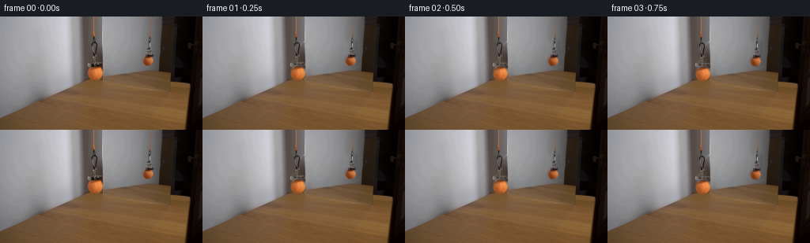
展开代码变化
--- 上一保存版本
+++ 本次保存版本
@@ -24,9 +24,9 @@
if not reflected:
# Hanging hardware and ball.
draw.rounded_rectangle(
- (110 * s, 33 * s, 132 * s, 61 * s), radius=3 * s, fill=255
- )
- draw.ellipse((113.7 * s, 60.4 * s, 137.2 * s, 83.6 * s), fill=255)
+ (114 * s, 33 * s, 130 * s, 61 * s), radius=3 * s, fill=255
+ )
+ draw.ellipse((111.3 * s, 63.2 * s, 130.1 * s, 83.0 * s), fill=255)
# Cord.
draw.line(
[(117.7 * s, -2 * s), (118.4 * s, 37 * s)],
@@ -48,9 +48,9 @@
s = scale
if not reflected:
draw.rounded_rectangle(
- (110 * s, 32.5 * s, 132 * s, 61 * s), radius=3 * s, fill=255
- )
- draw.ellipse((113.7 * s, 60.4 * s, 137.2 * s, 83.6 * s), fill=255)
+ (114 * s, 32.5 * s, 130 * s, 61 * s), radius=3 * s, fill=255
+ )
+ draw.ellipse((111.3 * s, 63.2 * s, 130.1 * s, 83.0 * s), fill=255)
else:
draw.rounded_rectangle(
(178.5 * s, 29.5 * s, 195 * s, 49 * s), radius=2.5 * s, fill=255
@@ -112,7 +112,7 @@
# hanger is extracted by its difference from the inpainted background.
ball_real = supersampled_mask(
lambda d, s: d.ellipse(
- (113.9 * s, 60.6 * s, 137.0 * s, 83.4 * s), fill=255
+ (111.5 * s, 63.4 * s, 129.9 * s, 82.8 * s), fill=255
)
)
ball_ref = supersampled_mask(
可观测工具轨迹
实际执行的命令与返回图片。
命令 1exit 0
/bin/bash -c "pwd && rg --files -g '"'!*.mp4'"' -g '"'!*.mov'"' -g '"'!*.avi'"' | sort | sed -n '1,200p'"
命令 2exit 0
/bin/bash -c 'cat prompt.txt'
命令 3exit 0
/bin/bash -c 'cat GENERATION_RULES.md'
命令 4exit 0
/bin/bash -c 'file first_frame.png && identify first_frame.png 2>/dev/null || true && ls -la'
命令 5exit 0
/bin/bash -c "sed -n '1,240p' artifact_io.py"
命令 6exit 0
/bin/bash -c "sed -n '1,260p' player_template.html"
命令 7exit 0
/bin/bash -c "python3 - <<'PY'
from PIL import Image
im=Image.open('first_frame.png')
print(im.size, im.mode)
PY"命令 8exit 0
/bin/bash -c "python3 - <<'PY'
from PIL import Image
im=Image.open('first_frame.png')
for name,box in [('left',(90,0,150,100)),('right',(160,0,220,90)),('full2x',(0,0,256,144))]:
c=im.crop(box)
c=c.resize((c.width*6,c.height*6),Image.Resampling.NEAREST)
c.save(f'.tmp/{name}.png')
PY"命令 9exit 0
/bin/bash -c "python3 - <<'PY' mods=['cv2','numpy','PIL','scipy','skimage'] for m in mods: try: x=__import__(m); print(m, getattr(x,'__version__','ok')) except Exception as e: print(m,'NO',e) PY"
命令 10exit 0
/bin/bash -c "python3 - <<'PY'
from PIL import Image
im=Image.open('first_frame.png')
im.resize((1024,576),Image.Resampling.LANCZOS).save('.tmp/full4x.png')
PY"命令 11exit 0
/bin/bash -c "python3 - <<'PY'
import cv2, numpy as np
im=cv2.imread('first_frame.png')
hsv=cv2.cvtColor(im, cv2.COLOR_BGR2HSV)
# orange red dominant
b,g,r=cv2.split(im)
m=((r>85)&(r>g*1.25)&(g>b*1.15)&(r-b>35)).astype(np.uint8)*255
num, lab, stats, cents=cv2.connectedComponentsWithStats(m)
for i in range(1,num):
x,y,w,h,a=stats[i]
if a>=3: print(i,(x,y,w,h,a),cents[i])
cv2.imwrite('.tmp/orange_mask.png',m)
PY"命令 12exit 0
/bin/bash -c "python3 - <<'PY'
import cv2,numpy as np
im=cv2.imread('first_frame.png')[:,:,::-1]
# print key pixel samples
for y in [20,30,40,50,54,58,60,63,68,75,80,85,90,95,100,110]:
print(y, [(x, tuple(im[y,x])) for x in [110,112,114,116,118,120,122,124,126,128,130,132,134,136,138,140,142,144,146]])
PY"命令 13exit 0
/bin/bash -c 'python3 generate.py'
命令 14exit 0
/bin/bash -c "python3 - <<'PY'
from PIL import Image
im=Image.open('frames/19.png')
im.resize((1024,576),Image.Resampling.LANCZOS).save('.tmp/frame19.png')
PY"命令 15exit 0
/bin/bash -c "python3 - <<'PY'
import generate
from PIL import Image
import numpy as np
f=np.asarray(Image.open('first_frame.png').convert('RGB'))
m=generate.make_masks()
c=generate.make_clean_background(f,m)
Image.fromarray(c).resize((1024,576),Image.Resampling.LANCZOS).save('.tmp/clean.png')
PY"命令 16exit 0
/bin/bash -c "python3 - <<'PY'
from PIL import Image,ImageDraw
import numpy as np
im=np.asarray(Image.open('first_frame.png').convert('RGB'))
# show exact patches around objects at 8x nearest
for name,box in [('real',(105,25,145,88)),('ref',(174,23,201,70))]:
x0,y0,x1,y1=box
p=Image.fromarray(im[y0:y1,x0:x1])
p=p.resize((p.width*10,p.height*10),Image.Resampling.NEAREST)
p.save(f'.tmp/{name}_10x.png')
PY"命令 17exit 0
/bin/bash -c "python3 - <<'PY'
from PIL import Image
import numpy as np
im=np.asarray(Image.open('first_frame.png').convert('RGB'))
# print x positions with orange for every y
for y in range(50,86):
xs=[]
for x in range(105,145):
r,g,b=map(int,im[y,x])
if r>100 and r>g*1.25 and g>b*1.1: xs.append(x)
if xs: print(y,min(xs),max(xs),len(xs))
PY"命令 18exit 0
/bin/bash -c "python3 - <<'PY'
from PIL import Image
import numpy as np
im=np.asarray(Image.open('first_frame.png').convert('RGB'))
# Compare generated frame 0
a=np.asarray(Image.open('frames/00.png'))
print('identical',np.array_equal(a,im), 'maxdiff',np.abs(a.astype(int)-im).max())
# per frame bounding changes
for i in [0,1,2,5,10,15,19]:
a=np.asarray(Image.open(f'frames/{i:02d}.png'))
d=np.any(a"'!=im,axis=2)
ys,xs=np.where(d)
print(i, d.sum(), (xs.min(),ys.min(),xs.max(),ys.max()) if len(xs) else None)
PY'命令 19exit 0
/bin/bash -c "python3 - <<'PY'
import cv2,numpy as np
from PIL import Image
import generate
im=np.asarray(Image.open('first_frame.png').convert('RGB'))
m=generate.make_masks(); c=generate.make_clean_background(im,m); ar,af=generate.extract_layers(im,c,m)
# print alpha extents
for name,a in [('real',ar),('ref',af)]:
ys,xs=np.where(a>0.02); print(name, (xs.min(),ys.min(),xs.max(),ys.max()),'sum',a.sum())
# crop visualization
v=np.uint8(np.clip(a*255,0,255)); Image.fromarray(v).crop((100,0,210,110)).resize((660,660),Image.Resampling.NEAREST).save(f'.tmp/{name}_alpha.png')
PY"命令 20exit 0
/bin/bash -c "python3 - <<'PY'
from PIL import Image
im=Image.open('inspection.png')
print(im.size)
PY"命令 21exit 0
/bin/bash -c "python3 - <<'PY'
from PIL import Image
im=Image.open('frames/19.png')
# crops of full scene object area at 8x
for name,box in [('both',(95,0,210,110)),('real',(103,20,150,105)),('ref',(170,20,205,85))]:
c=im.crop(box); c.resize((c.width*8,c.height*8),Image.Resampling.NEAREST).save(f'.tmp/f19_{name}.png')
PY"命令 22exit 0
/bin/bash -c "python3 - <<'PY'
from PIL import Image
import numpy as np
im=np.asarray(Image.open('first_frame.png').convert('RGB'))
# display segmentation categories around real object, sample lines
for y in [0,10,20,30,32,34,36,38,40,42,44,46,48,50,52,54,56,58,60,62,64,66,68,70,72,74,76,78,80,82,84]:
print('y',y, 'x118',tuple(im[y,118]), 'x122',tuple(im[y,122]),'x130',tuple(im[y,130]),'x135',tuple(im[y,135]))
PY"命令 23exit 0
/bin/bash -c "python3 - <<'PY'
import cv2, numpy as np
from PIL import Image
im=np.asarray(Image.open('first_frame.png').convert('RGB')).astype(float)
# output absolute difference frame0 clean and visual; region only
import generate
m=generate.make_masks(); c=generate.make_clean_background(im.astype(np.uint8),m).astype(float)
d=np.abs(im-c).mean(2)
for x0,x1,y0,y1 in [(100,145,0,100),(165,205,0,80)]:
print((x0,x1,y0,y1),'mean',d[y0:y1,x0:x1].mean(),'max',d[y0:y1,x0:x1].max(),'count >5',(d[y0:y1,x0:x1]>5).sum())
cv2.imwrite('.tmp/clean_diff.png',np.clip(d*6,0,255).astype(np.uint8))
PY"命令 24exit 0
/bin/bash -c "python3 - <<'PY'
from PIL import Image
im=Image.open('frames/10.png')
im.crop((95,0,210,110)).resize((920,880),Image.Resampling.NEAREST).save('.tmp/f10_both.png')
PY"命令 25exit 0
/bin/bash -c "python3 - <<'PY'
from PIL import Image
import numpy as np
im=np.asarray(Image.open('first_frame.png').convert('RGB'))
# diff of clean at vertical stripe x 110-140 excluding object; list x by mean diff above y 30
import generate
m=generate.make_masks(); c=generate.make_clean_background(im,m)
d=np.abs(im.astype(int)-c.astype(int)).mean(2)
for x in range(100,150):
if d[:60,x].mean()>3: print(x,round(d[:60,x].mean(),1))
PY"命令 26exit 0
/bin/bash -c "python3 - <<'PY'
import cv2,numpy as np
from PIL import Image
import generate
im=np.asarray(Image.open('first_frame.png').convert('RGB'))
m=generate.make_masks(); c=generate.make_clean_background(im,m)
# inspect alpha values at x 110-140, rows 30-60
ar,af=generate.extract_layers(im,c,m)
for y in [32,36,40,44,48,52,56,60,64,68,72,76,80]:
print(y,'alpha', ' '.join(f'{v:.1f}' for v in ar[y,110:139]))
PY"命令 27exit 0
/bin/bash -c "python3 - <<'PY'
from PIL import Image
im=Image.open('frames/19.png')
im.crop((103,20,150,105)).resize((470,850),Image.Resampling.NEAREST).save('.tmp/f19_real.png')
PY"命令 28exit 0
/bin/bash -c "python3 - <<'PY'
import cv2, numpy as np
from PIL import Image
for idx in [1,5,10,15,19]:
im=np.asarray(Image.open(f'frames/{idx:02d}.png'))
# detect strong orange in left region
r,g,b=[im[:,:,j].astype(int) for j in range(3)]
m=((r>150)&(r>g*1.4)&(g>b*1.2)&(np.indices(r.shape)[1]<150)).astype(np.uint8)
ys,xs=np.where(m)
print(idx, 'orange', (xs.min(),ys.min(),xs.max(),ys.max()) if len(xs) else None, len(xs))
PY"命令 29exit 0
/bin/bash -c "python3 - <<'PY'
import cv2,numpy as np
from PIL import Image
im=np.asarray(Image.open('first_frame.png').convert('RGB'))
# visualize inpaint mask
import generate
m=generate.make_masks(); mask=(m['all']>0.025).astype(np.uint8)*255; mask=cv2.dilate(mask,np.ones((3,3),np.uint8),iterations=1)
Image.fromarray(mask).resize((1024,576),Image.Resampling.NEAREST).save('.tmp/mask.png')
PY"命令 30exit 0
/bin/bash -c "python3 - <<'PY'
from PIL import Image
import numpy as np
im=np.asarray(Image.open('frames/19.png').convert('RGB'))
for name,box in [('r',(104,68,144,106)),('m',(103,15,148,106))]:
c=Image.fromarray(im[box[1]:box[3],box[0]:box[2]])
c.resize((c.width*12,c.height*12),Image.Resampling.NEAREST).save(f'.tmp/f19_{name}12.png')
PY"命令 31exit 0
/bin/bash -c "python3 - <<'PY'
import cv2,numpy as np
from PIL import Image
for idx in [0,10,19]:
im=np.asarray(Image.open(f'frames/{idx:02d}.png').convert('RGB')).astype(float)
# local contrast edges magnitude
gray=cv2.cvtColor(im.astype(np.uint8),cv2.COLOR_RGB2GRAY).astype(float)
gx=cv2.Sobel(gray,cv2.CV_64F,1,0,ksize=3);gy=cv2.Sobel(gray,cv2.CV_64F,0,1,ksize=3)
mag=np.hypot(gx,gy)
print(idx, 'edge', mag[0:100,100:150].mean(),mag[0:80,165:205].mean())
PY"命令 32exit 0
/bin/bash -c "python3 - <<'PY'
from PIL import Image
import numpy as np
im=np.asarray(Image.open('first_frame.png').convert('RGB'))
for x in range(105,145):
# mean patch around each x for rows 35-55 and 55-62
print(x, tuple(np.mean(im[35:55,x].astype(float),0).round().astype(int)), tuple(np.mean(im[55:62,x].astype(float),0).round().astype(int)))
PY"命令 33exit 0
/bin/bash -c "python3 - <<'PY'
import numpy as np
from PIL import Image
im=np.asarray(Image.open('first_frame.png').convert('RGB')).astype(float)
# identify boundary between wall and metal at x 129 across y
for y in [0,10,20,30,40,50,60,70,80,90,100,110,120]:
print(y, [tuple(im[y,x].astype(int)) for x in range(126,132)])
PY"命令 34exit 0
/bin/bash -c 'python3 generate.py'
命令 35exit 0
/bin/bash -c "python3 - <<'PY'
from PIL import Image
for idx in [0,1,5,10,19]:
im=Image.open(f'frames/{idx:02d}.png')
im.crop((100,0,205,105)).resize((840,840),Image.Resampling.NEAREST).save(f'.tmp/new_{idx:02d}.png')
PY"命令 36exit 0
/bin/bash -c "python3 - <<'PY'
import numpy as np
from PIL import Image
import generate
im=np.asarray(Image.open('first_frame.png').convert('RGB'))
m=generate.make_masks(); c=generate.make_clean_background(im,m); ar,af=generate.extract_layers(im,c,m)
for name,a in [('r',ar),('f',af)]:
ys,xs=np.where(a>.02); print(name,(xs.min(),ys.min(),xs.max(),ys.max()),a.sum())
Image.fromarray(np.uint8(a*255)).crop((100,20,205,100)).resize((840,640),Image.Resampling.NEAREST).save('.tmp/new_'+name+'_alpha.png')
PY"命令 37exit 0
/bin/bash -c "python3 - <<'PY'
from PIL import Image
import numpy as np
im=np.asarray(Image.open('first_frame.png').convert('RGB'))
# examine likely ball boundary exact orange masks by row and colors
for y in range(61,84):
xs=[]
for x in range(108,133):
r,g,b=map(int,im[y,x])
if r>85 and r>g*1.18 and g>b*1.05: xs.append(x)
print(y, xs)
PY"命令 38exit 0
/bin/bash -c "python3 - <<'PY'
import numpy as np
from PIL import Image
for idx in [0,1,2,5,10,15,19]:
im=np.asarray(Image.open(f'frames/{idx:02d}.png').convert('RGB')).astype(int)
# orange centroid right / left in object region, with saturation thresholds
for side,(x0,x1,y0,y1) in [('L',(100,150,0,105)),('R',(165,205,0,80))]:
crop=im[y0:y1,x0:x1]; r,g,b=crop.transpose(2,0,1)
mask=(r>110)&(r>g*1.3)&(g>b*1.1)
ys,xs=np.where(mask)
if len(xs): print(idx,side,len(xs), (round(xs.mean()+x0,2),round(ys.mean()+y0,2)))
PY"命令 39exit 0
/bin/bash -c "python3 - <<'PY'
import numpy as np
from PIL import Image
for idx in [0,10,19]:
im=np.asarray(Image.open(f'frames/{idx:02d}.png').convert('RGB')).astype(float)
print('frame',idx)
for y in [82,84,86,88,90,92,94,96,98,100,102]:
print(y, tuple(im[y,120].astype(int)), tuple(im[y,124].astype(int)))
PY"命令 40exit 0
/bin/bash -c "python3 - <<'PY'
import cv2,numpy as np
from PIL import Image
for idx in [0,1,10,19]:
im=np.asarray(Image.open(f'frames/{idx:02d}.png').convert('RGB'))
# difference from clean background, just object regions; report nonbackground and energy
if idx==0:
import generate
m=generate.make_masks(); bg=generate.make_clean_background(im,m)
else: bg=np.asarray(Image.open('.tmp/clean.png').resize((256,144),Image.Resampling.LANCZOS))
d=np.abs(im.astype(int)-bg.astype(int)).mean(2)
print(idx,'energy',d[0:105,100:150].sum(),'right',d[0:80,165:205].sum())
PY"命令 41exit 0
/bin/bash -c "python3 -m py_compile generate.py && python3 - <<'PY'
import numpy as np
from PIL import Image
from pathlib import Path
p=np.load('pixels.npz')['pixels']
print('pixels',p.shape,p.dtype,'range',int(p.min()),int(p.max()))
frames=np.stack([np.asarray(Image.open(f'frames/{i:02d}.png')) for i in range(20)])
first=np.asarray(Image.open('first_frame.png').convert('RGB'))
print('frames',frames.shape,frames.dtype)
print('first_exact',np.array_equal(frames[0],first))
print('frame_files',len(list(Path('frames').glob('*.png'))),'index',Path('index.html').stat().st_size)
PY"命令 42exit 0
/bin/bash -c 'git status --short 2>/dev/null || true && du -h pixels.npz index.html inspection.png transition_check.png'
命令 43exit 0
/bin/bash -c "python3 - <<'PY'
import numpy as np
from PIL import Image
# use weighted orange centroid only for ball, limit below hardware to avoid cord/hardware
for idx in range(20):
im=np.asarray(Image.open(f'frames/{idx:02d}.png').convert('RGB')).astype(float)
r,g,b=im.transpose(2,0,1)
yy,xx=np.indices(r.shape)
m=(r>140)&(r>g*1.35)&(g>b*1.1)
for side,(x0,x1,y0,y1) in [('L',(105,140,60,105)),('R',(174,200,42,80))]:
mm=m[y0:y1,x0:x1]
ys,xs=np.where(mm)
if len(xs): print(idx,side,round(ys.mean()+y0,2),len(xs))
PY"命令 44exit 0
/bin/bash -c "python3 - <<'PY'
from PIL import Image
import numpy as np
# compare physical drop versus ball centroid: actual visible ball shifts ~14? output mask visually end is y95 vs start y83 ->12. Need quantify via template matching.
im0=np.asarray(Image.open('first_frame.png').convert('RGB'))
im19=np.asarray(Image.open('frames/19.png').convert('RGB'))
import cv2
# template near ball 109:132,61:85, match in later left area
tpl=im0[62:84,110:131]
# only RGB color match, score normalized
res=cv2.matchTemplate(im19[62:105,100:145],tpl,cv2.TM_CCOEFF_NORMED)
_,mx,_,loc=cv2.minMaxLoc(res)
print('match',mx,loc,'abs',100+loc[0],62+loc[1])
PY"命令 45exit 0
/bin/bash -c "python3 - <<'PY'
import numpy as np
from PIL import Image
# measure ball bbox using color + connected components around left region
import cv2
for idx in [0,19]:
im=np.asarray(Image.open(f'frames/{idx:02d}.png').convert('RGB'))
r,g,b=im.transpose(2,0,1).astype(int)
m=((r>120)&(r>g*1.3)&(g>b*1.05)).astype(np.uint8)
m[:,:95]=0;m[:,145:]=0;m[:55]=0;m[105:]=0
n,l,st,c=cv2.connectedComponentsWithStats(m)
print(idx,sorted(st[1:].tolist(),key=lambda z:z[4],reverse=True)[:3])
PY"命令 46exit 0
/bin/bash -c "python3 - <<'PY'
import numpy as np
from PIL import Image
# local background patch compare to clean
import generate
im=np.asarray(Image.open('first_frame.png').convert('RGB'))
m=generate.make_masks(); c=generate.make_clean_background(im,m)
# rows outside objects at x 108-130 compare average difference
for y0,y1 in [(0,30),(30,60),(84,100)]:
d=np.abs(im.astype(int)-c.astype(int)).mean(2)
print((y0,y1), d[y0:y1,108:131].mean(),d[y0:y1,131:145].mean())
PY"命令 47exit 0
/bin/bash -c "python3 - <<'PY'
import numpy as np
from PIL import Image
# verify consecutive frame temporal continuity in changed regions
frames=[np.asarray(Image.open(f'frames/{i:02d}.png').convert('RGB')).astype(float) for i in range(20)]
for i in range(1,20):
d=np.abs(frames[i]-frames[i-1]).mean(2)
print(i, round(d[20:100,105:140].mean(),2),round(d[20:75,175:200].mean(),2),int((d>10).sum()))
PY"命令 48exit 0
/bin/bash -c "python3 - <<'PY'
import numpy as np
from PIL import Image
im0=np.asarray(Image.open('first_frame.png').convert('RGB'))
im1=np.asarray(Image.open('frames/01.png').convert('RGB'))
d=np.abs(im0.astype(int)-im1.astype(int)).mean(2)
# count only object zones >10
for box in [(100,0,145,100),(165,0,205,80)]:
x0,y0,x1,y1=box; z=d[y0:y1,x0:x1]; print(box,z.mean(),z.max(),(z>10).sum())
# diff location row/col stats
print('rows',[(y,round(d[y].max(),1)) for y in range(0,100) if d[y].max()>50][:30])
PY"命令 49exit 0
/bin/bash -c "python3 - <<'PY'
from PIL import Image
im=Image.open('frames/01.png')
im.crop((100,20,145,105)).resize((540,1020),Image.Resampling.NEAREST).save('.tmp/check01.png')
PY"命令 50exit 0
/bin/bash -c "python3 - <<'PY'
import numpy as np
from PIL import Image
for idx in [0,1,2,3]:
im=np.asarray(Image.open(f'frames/{idx:02d}.png').convert('RGB')).astype(float)
# expected ball center x122.5 y? weighted top bright area between y64-78
crop=im[60:80,108:133]; r,g,b=crop.transpose(2,0,1); yy,xx=np.indices(r.shape)
mask=(r>130)&(r>g*1.4)
print(idx, mask.sum(), (np.average(yy,weights=mask)+60,np.average(xx,weights=mask)+108) if mask.any() else None)
PY"命令 51exit 0
/bin/bash -c "python3 - <<'PY'
import numpy as np
from PIL import Image
import generate
# test clean background around right cord region
im=np.asarray(Image.open('first_frame.png').convert('RGB')); m=generate.make_masks(); c=generate.make_clean_background(im,m)
d=np.abs(im.astype(int)-c.astype(int)).mean(2)
print('right top region diff',d[0:35,185:195].mean(), d[0:35,185:195].max())
print('left cord diff',d[0:35,114:122].mean(),d[0:35,114:122].max())
PY"命令 52exit 0
/bin/bash -c "python3 - <<'PY'
import numpy as np
from PIL import Image
im=np.asarray(Image.open('first_frame.png').convert('RGB')).astype(int)
# Compare top cord strip with local background columns
for x in range(112,123):
print(x,[tuple(im[y,x]) for y in [0,5,10,15,20,25,30,35]])
PY"命令 53exit 0
/bin/bash -c "python3 - <<'PY'
import numpy as np
from PIL import Image
import generate
im=np.asarray(Image.open('first_frame.png').convert('RGB')).astype(float)
m=generate.make_masks(); c=generate.make_clean_background(im.astype(np.uint8),m).astype(float)
ar,af=generate.extract_layers(im.astype(np.uint8),c.astype(np.uint8),m)
# Check mask y row 34 etc
for y in [30,31,32,33,34,35,36,37,38,39,40]:
print(y,'x110-132 mask', ''.join('#' if v>.5 else '+' if v>.05 else '.' for v in m['all'][y,110:133]),'ar',''.join('#' if v>.5 else '+' if v>.05 else '.' for v in ar[y,110:133]))
PY"命令 54exit 0
/bin/bash -c "python3 - <<'PY'
import numpy as np
from PIL import Image
import generate
im=np.asarray(Image.open('first_frame.png').convert('RGB'))
m=generate.make_masks(); c=generate.make_clean_background(im,m)
ar,af=generate.extract_layers(im,c,m)
# inspect alpha over metallic hardware; sum region and compare to expected
for y0,y1 in [(30,42),(42,52),(52,62),(62,84)]:
print((y0,y1),'alpha sum',ar[y0:y1,108:133].sum(),'mask sum',m['all'][y0:y1,108:133].sum())
PY"命令 55exit 0
/bin/bash -c "python3 - <<'PY'
import numpy as np
from PIL import Image
# check final output dimensions and row timing of motion; compare frame0 and final at ball edges
for idx in [0,5,10,15,19]:
im=np.asarray(Image.open(f'frames/{idx:02d}.png').convert('RGB'))
# find orange region in left where blue low / red high, below 60
r,g,b=im.transpose(2,0,1).astype(int)
mask=(r>130)&(g>b*1.5)&(np.arange(256)[None,:]>105)&(np.arange(256)[None,:]<140)&(np.arange(144)[:,None]>60)
ys,xs=np.where(mask)
print(idx,(xs.min(),ys.min(),xs.max(),ys.max()) if len(xs) else None)
PY"命令 56exit 0
/bin/bash -c "python3 - <<'PY'
import numpy as np
from PIL import Image
# verify frames are all distinct and changed pixels are spatially smooth
from pathlib import Path
imgs=[np.asarray(Image.open(p).convert('RGB')) for p in sorted(Path('frames').glob('*.png'))]
print('unique consecutive',all(not np.array_equal(imgs[i],imgs[i-1]) for i in range(1,20)))
# changed pixel counts for all
for i in range(1,20): print(i, np.any(imgs[i]"'!=imgs[i-1],axis=2).sum())
PY'命令 57exit 0
/bin/bash -c "python3 - <<'PY'
from PIL import Image
im=Image.open('frames/05.png')
im.crop((100,20,205,105)).resize((1050,850),Image.Resampling.NEAREST).save('.tmp/final05.png')
PY"命令 58exit 0
/bin/bash -c "python3 - <<'PY'
from PIL import Image
import numpy as np
im0=np.asarray(Image.open('frames/00.png').convert('RGB'))
im1=np.asarray(Image.open('frames/01.png').convert('RGB'))
d=np.abs(im0.astype(int)-im1.astype(int)).mean(2)
for y in range(25,85):
xs=np.where(d[y]>15)[0]
if len(xs): print(y, xs.min(), xs.max(),len(xs))
PY"命令 59exit 0
/bin/bash -c "python3 - <<'PY'
import numpy as np
from PIL import Image
for idx in [0,19]:
im=np.asarray(Image.open(f'frames/{idx:02d}.png').convert('RGB'))
r,g,b=im.transpose(2,0,1).astype(int)
# clean orange candidate using red excess and local left ball bbox
m=(r-g>35)&(r-b>55)&(np.arange(256)[None,:]>=108)&(np.arange(256)[None,:]<=133)&(np.arange(144)[:,None]>=60)&(np.arange(144)[:,None]<100)
ys,xs=np.where(m)
print(idx,'count',len(xs),'bbox',(xs.min(),ys.min(),xs.max(),ys.max()))
PY"视觉工具实际返回图片 1
视觉工具实际返回图片 2
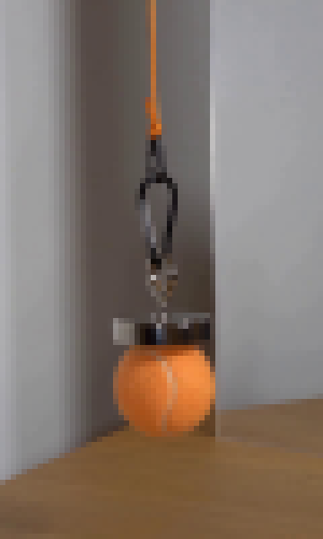
视觉工具实际返回图片 3
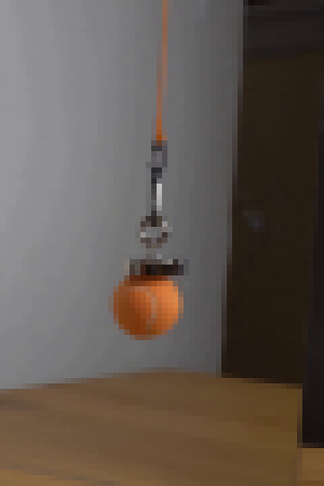
视觉工具实际返回图片 4
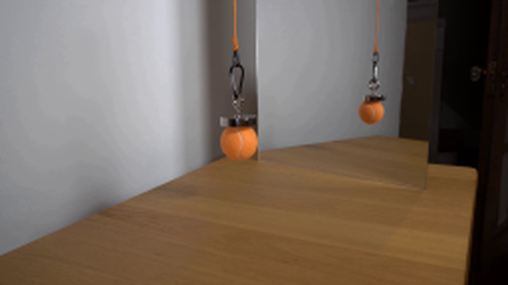
视觉工具实际返回图片 5

视觉工具实际返回图片 6
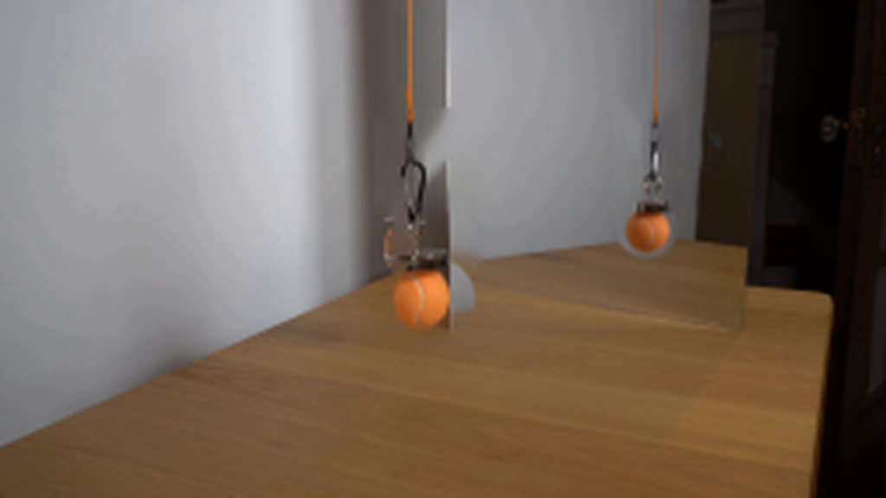
视觉工具实际返回图片 7
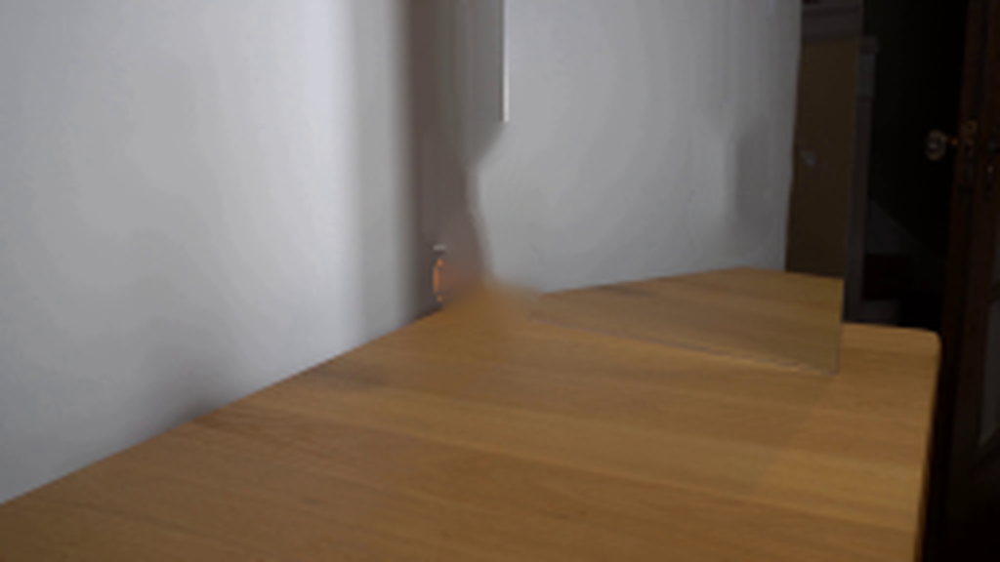
视觉工具实际返回图片 8
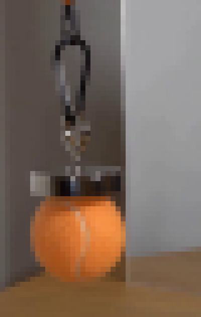
视觉工具实际返回图片 9
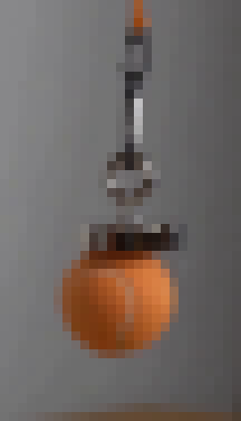
视觉工具实际返回图片 10
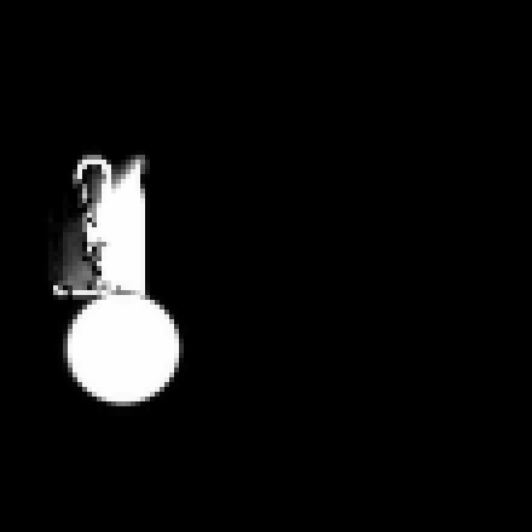
视觉工具实际返回图片 11
视觉工具实际返回图片 12
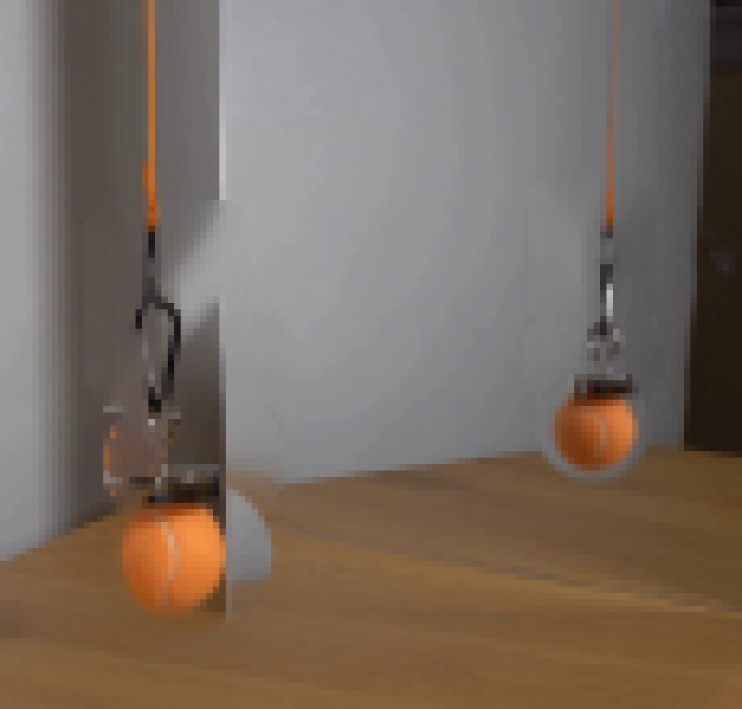
视觉工具实际返回图片 13
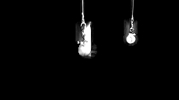
视觉工具实际返回图片 14
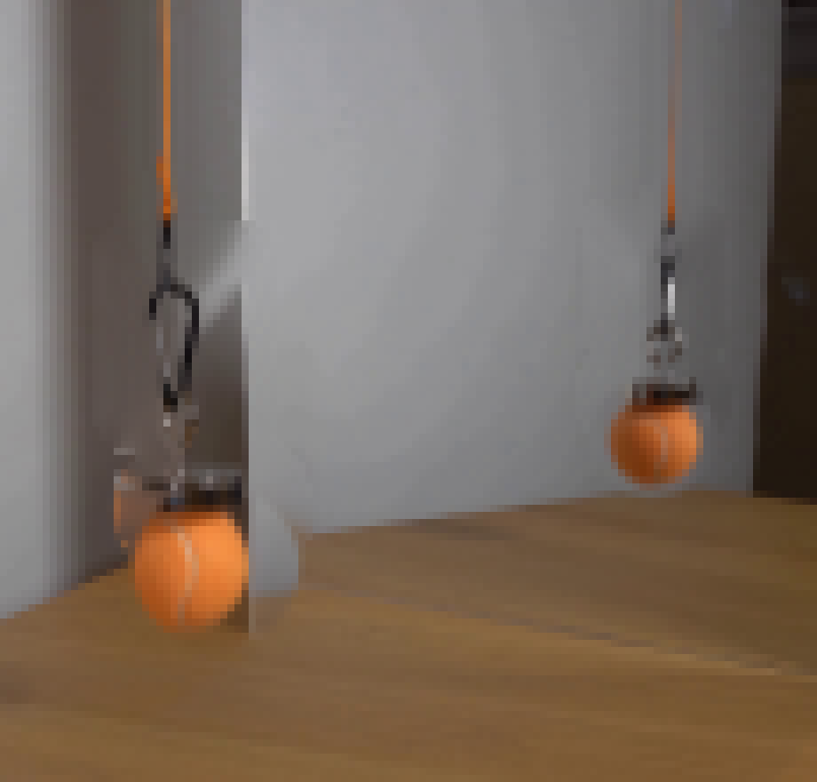
视觉工具实际返回图片 15
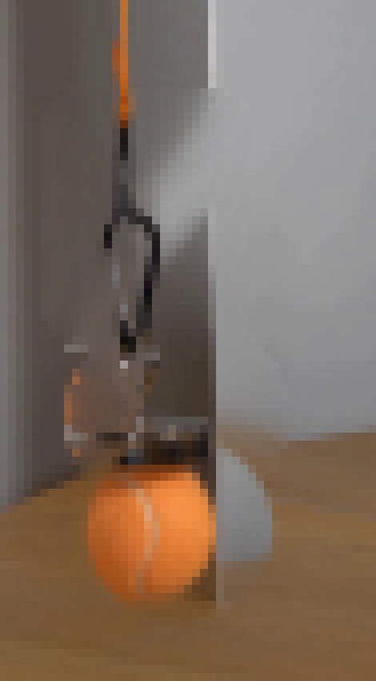
视觉工具实际返回图片 16
视觉工具实际返回图片 17
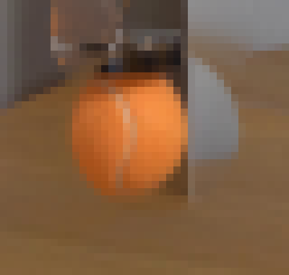
视觉工具实际返回图片 18
视觉工具实际返回图片 19
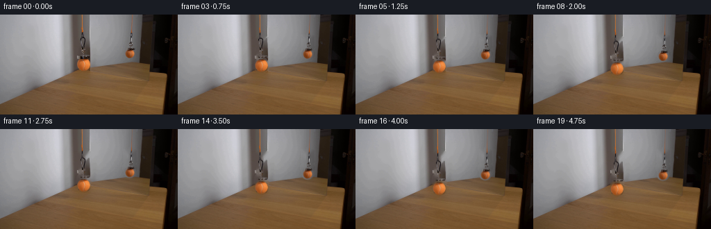
视觉工具实际返回图片 20
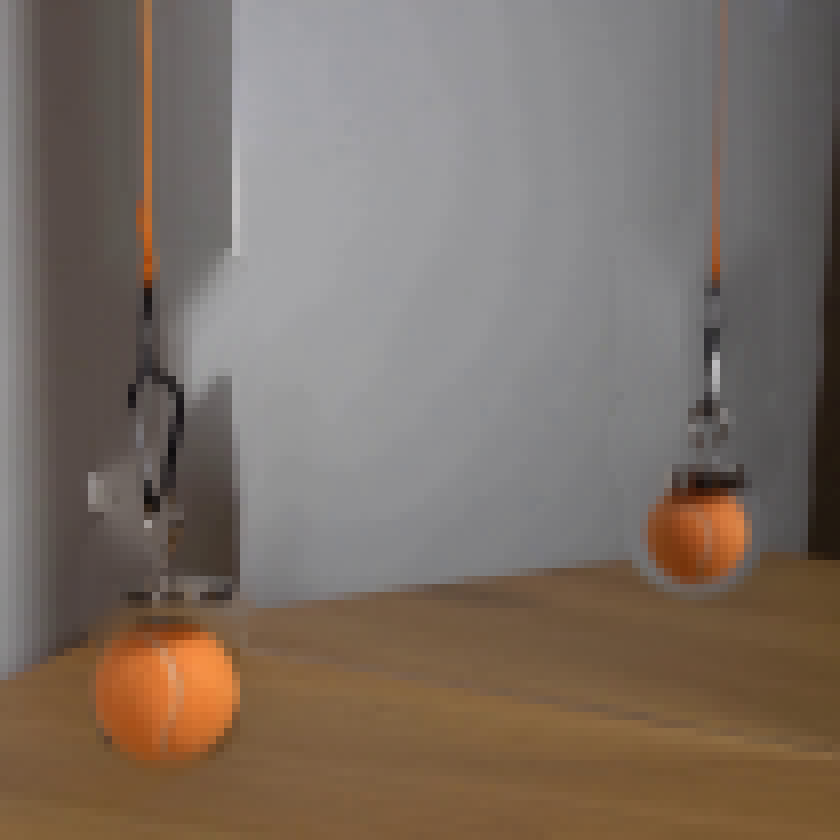
视觉工具实际返回图片 21
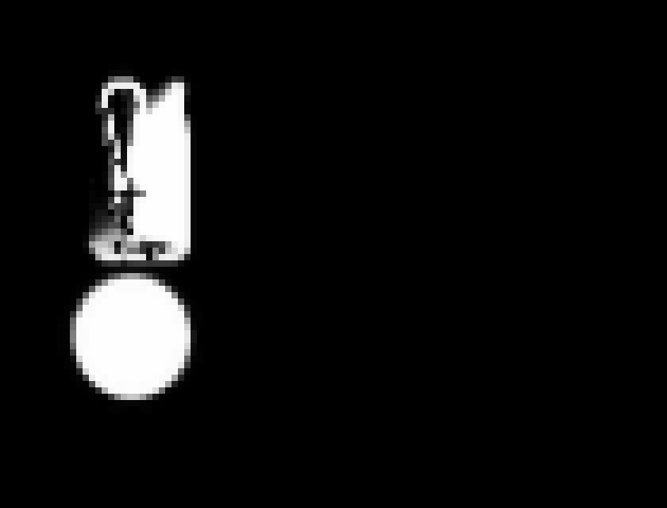
视觉工具实际返回图片 22
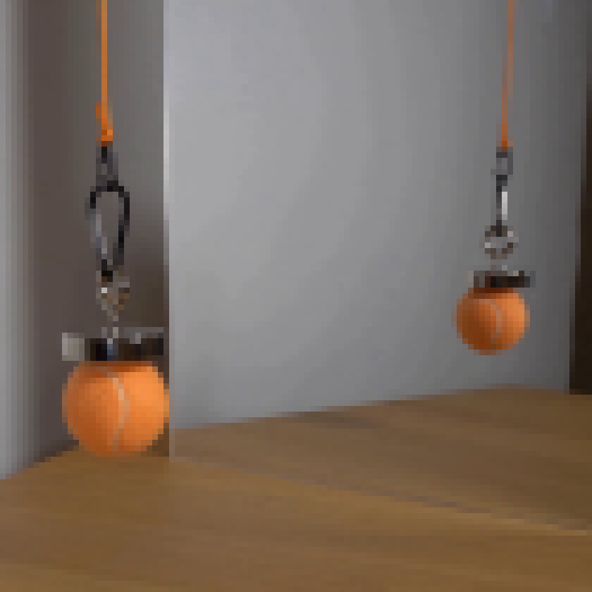
视觉工具实际返回图片 23
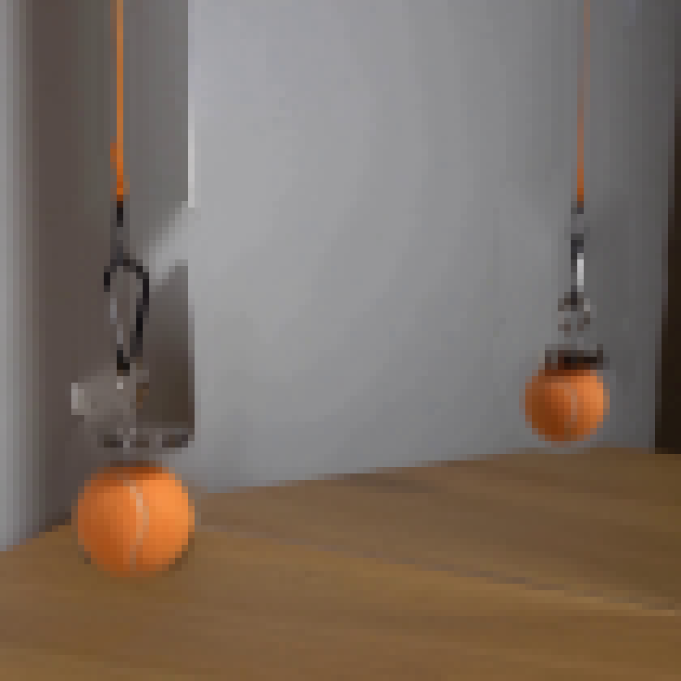
视觉工具实际返回图片 24
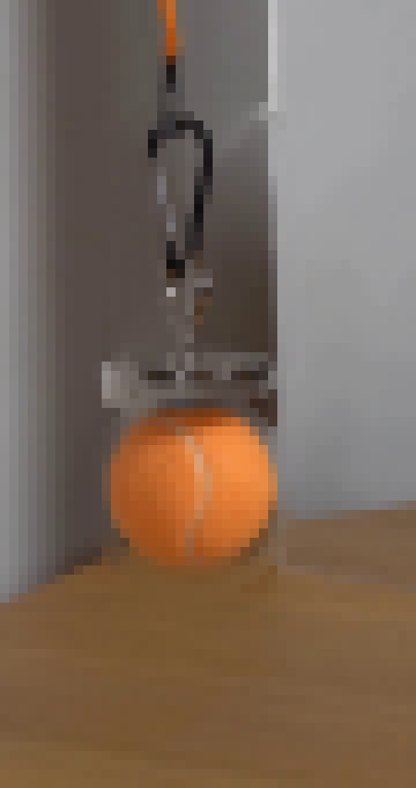
视觉工具实际返回图片 25
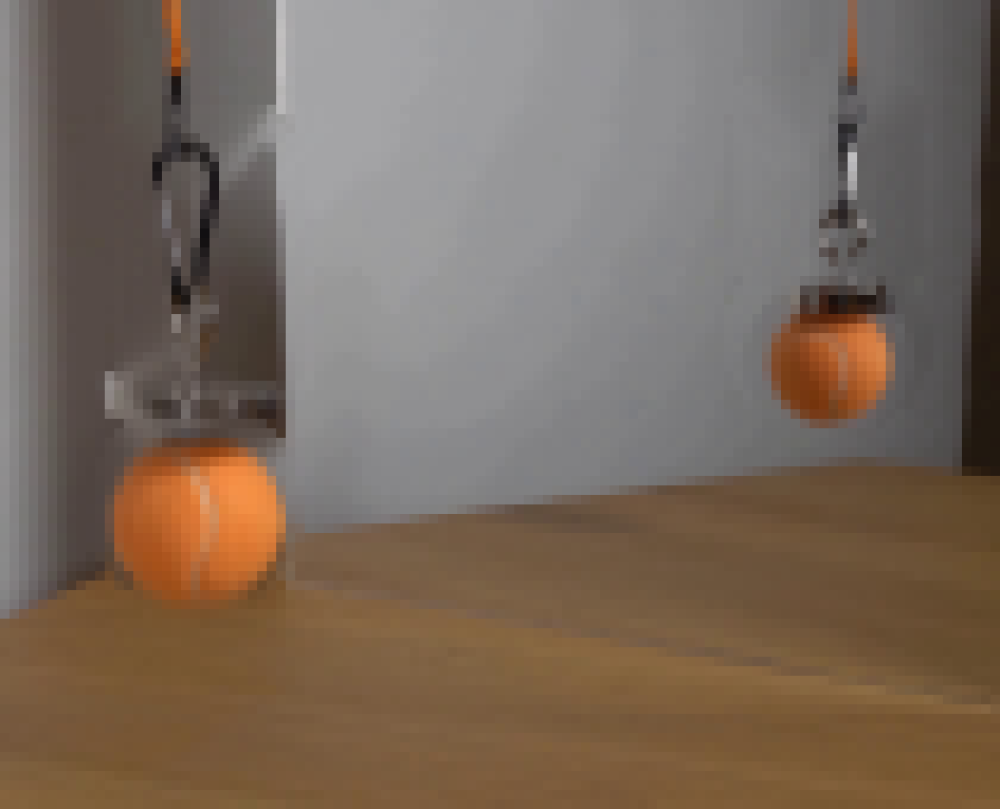
保存候选 2 份；完成命令 59 次；可验证图片返回 25 张。原始 API 响应与完整日志保留在本地。